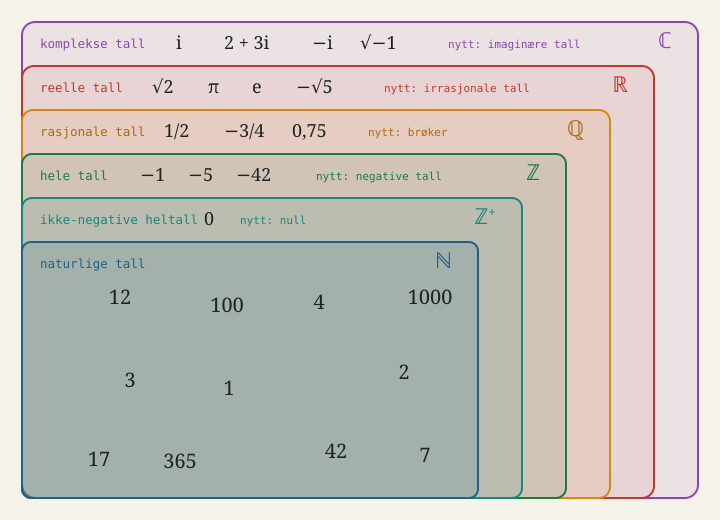

1. Formler, notasjon og enheter#
Hvis du lurer på noe og ikke helt vet hvilket kapittel det tilhører, er det mye mulig at du kan finne det her!
1.1 Å tolke kompliserte formler#
I fysikalsk kjemi presenteres flere tunge formler som kan være vanskelige å fordøye. Vi skal derfor se et eksempel på hvordan du kan bryte ned og jobbe med formler, og vi tar utgangspunkt i Maxwell-Boltzmann-fordelingen som et eksempel.
\(f(v)=4\pi \left( \frac{m}{2\pi k_B T} \right)^{\frac{3}{2}} v^2 e^{-\frac{mv^2}{2k_B T}}\)
1. Hvilke variable ser vi på?
Det første vi kan gjøre er å se på hva funksjonen beskriver, og hvilke enheter det er snakk om.
Variabel |
Enhet |
Forklaring |
|---|---|---|
\(m\) |
\([\text{kg}]\) |
Massen til ett molekyl |
\(v\) |
\([\text{m}/\text{s}]\) |
Fart |
\(k_B\) |
\([\text{J}/\text{K}]=[\text{kg} \cdot \text{m}^2/\text{s}^2 \cdot \text{K}]\) |
Boltzmann-konstanten |
\(T\) |
\([\text{K}]\) |
Temperatur |
\(f(v)\) |
\([\text{s}/\text{m}]\) |
Sansynnlighetstettheten for farten \(v\) |
Nå vet vi at vi ser på sannsynligheten \(f(v)\) som funksjon av fart \(v\), der også masse \(m\), Boltzmannkonstanten \(k_B\) og temperaturen \(T\) er med i funksjonen. Allerede her kan vi notere oss at sannsynligheten bare er en funksjon av \(v\), det betyr at en slik funksjon holder de andre variablene konstante.
2. Er det noen antakelser for formelen?
Ofte er formlene i termodynamikk utledet fra andre og har forskjellige antakelser i grunn. Maxwell-Boltzmann-fordelingen har følgende antakelser i grunn:
Ideell gass der molekylene antas å være punktpartikler uten intermolekylære krefter mellom seg, med elastiske kollisjoner.
Termisk likevekt ved temperatur \(T\).
Klassisk tilnærming, altså kan farten ta hvilken som helst verdi og molekylene har veldefinert posisjon og fart.
Tilfeldig bevegelse der fordelingen av fart er lik i alle retninger i rommet, og der ingen retning som er favorisert.
Nå har vi allerede styr på masse! Vi vet at Maxwell-Boltzmann-fordelingen beskriver sannsynlighetstettheten \(f(v)\) som funksjon av farten \(v\) til en ideell gass hvor molekylene har masse \(m\), og ved termisk likevekt ved temperaturen \(T\). Molekylene beveger seg tilfeldig, ingen retning er favorisert over en annen, og gassen vi beskriver er klassisk (heller enn kvantemekanisk).
3. Hva er sammenhengen mellom formel og graf?
Det kan være vanskelig å se hva som skjer når vi endrer de ulike variablene kun basert på formelen, men det er mye lettere visuelt. Simulasjonen nedenfor lar oss endre \(T\) og \(m\) og se hvordan fordelingen endrer seg.
I flere tilfeller kan vi knytte opp formelen til viktige konsepter i matematikk, noe vi også kan her. For eksempel vet vi fra 5.1 Sansynnlighetsfordelinger at arealet under kurven til en sannsynlighetsfordeling må være \(1\), som betyr at uansett hvilke parametre vi endrer, så må totalarealet være likt. En endring i én parameter går derfor på bekostning av en annen parameter. Siden sannsynlighetsfordelingen er kontinuerlig, vet vi også at sannsynligheten for én spesifikk \(v\) er null. Mye av dette blir nyttig i neste del der vi ser hvordan formelen henger sammen med kjemien.
4. Hvordan henger formel og kjemi sammen?
Dette er den viktigste delen. Vi har observert hvordan formelen endrer seg med de ulike variablene, men hva sier dette om kjemien?
Temperatur. Når du skrur opp \(T\), flyttes kurven mot høyre og blir bredere og lavere. Molekylene beveger seg altså raskere, men fartene sprer seg også mer. Dette er grunnen til at reaksjoner går fortere ved høyere temperatur: en reaksjon krever som regel at molekylene har nok energi til å overkomme en aktiveringsbarriere, og andelen molekyler i den høye halen vokser kraftig med temperaturen. Legg merke til at det ikke er gjennomsnittsfarten som først og fremst avgjør dette - det er hvor mange som befinner seg helt ute i høyre hale.
Masse. Tyngre molekyler gir en smal, høy kurve nær lave farter, mens lette molekyler får en bred fordeling med langt høyere farter. Ved samme temperatur har alle molekyler like mye kinetisk energi i gjennomsnitt, men siden \(E_k=\frac{1}{2}mv^2\), må de tunge kompensere med lavere fart. Dette forklarer hvorfor lette gasser diffunderer raskere enn tunge, og hvorfor helium lekker ut av en ballong mens nitrogen blir værende.
Arealet er alltid \(1\). Uansett hvordan du stiller inn \(T\) og \(m\), forblir det totale arealet under kurven det samme. Det er normeringskravet: hvert molekyl må ha en eller annen fart. Blir kurven bredere, må den nødvendigvis bli lavere - dette er den samme sammenhengen vi så for normalfordelingen.
Formen er alltid skjev. Kurven starter i null, stiger til en topp, og faller av med en lang hale mot høyre. Grunnen ligger i de to faktorene i formelen: \(v^2\) trekker kurven opp fra null, mens Boltzmann-faktoren \(e^{-mv^2/2k_BT}\) trekker den ned igjen for høye farter. Produktet av en voksende og en avtagende faktor gir toppen. Uten \(v^2\)-leddet ville flest molekyler hatt fart null, noe som åpenbart er feil - i en gass i likevekt står ingen molekyler stille.
Den lange halen betyr noe. At kurven aldri når helt ned til null mot høyre, forteller at det alltid finnes noen få molekyler med svært høy fart. Det er disse som fordamper fra en væskeoverflate, som rømmer fra en planets atmosfære, og som klarer å reagere selv når temperaturen er lav. Selv om de utgjør en forsvinnende liten andel, er det ofte de som styrer hva som faktisk skjer.
Dette var et eksempel på hvordan man kan bryte ned en formel for å gjøre den lettere og mer intuitiv å forstå. Til det trenger vi både matte, kjemi og fysikk.
1.2 Mengdelære#
Mengder er en helt grunnleggende del av flere grener i matematikk, og noe vi ofte ikke tenker over siden det er såpass abstrakt. Det er likevel viktig å ha noe forståelse når vi jobber med mengder, da de ofte forteller oss noe om hvilke tall ellr hvilket område vi jobber i. Vi begynner med å definere mengder, delmengder og elementer.
1.2.1 Mengder, delmengder og elementer#
En mengde er et relativt intuitivt konsept - det er en samling av noe. Dette noe kaller vi elementer. En mengde som er i en annen mengde kaller vi en delmengde. I matematikken krever vi at elementene i mengder er tydelig beskrevet, slik at det ikke er noe tvil om hva som er med i mengden og ikke.
Def. 1.1 - Mengde
En mengde \(A\) er en veldefinert samling av objekter som kalles elementer. Definisjonen av en mengde skrives ofte som et sett av klammeparenteser.
Den tomme mengden er en mengde uten elementer og skrives som \(\emptyset\) eller \(\{\}\).
Merk at en mengde må være veldefinert, noe som betyr at det ikke kan være noe tvil om hvilke elementer som er med i mengden. Mengden av fine biler eller mengden av tall er ikke veldefinerte fordi det ikke er tydelig hvilke elementer som er med i mengdene. Mengden av alle partall eller mengden av alle røde biler er derimot mengder, fordi det er tydelig definert hva slags elementer som er i mengdene.
Def. 1.2 - Delmengde
Hvis \(A\) og \(B\) er mengder, og ethvert element i \(A\) også er et element i \(B\), er \(A\) en delmengde av \(B\). Vi skriver
\(A \subset B\)
Et eksempel på en mengde er for eksempel alle heltallene mellom 0 og 10. Det er ingen tvil om hvilke elementer som er med, og mengden vår er \(\{0,1,2,3,4,5,6,7,8,9,10\}\). Et eksempel på en delmende av denne mengden er alle heltallene fra 0 til 5.
1.2.2 Mengdenotasjon#
Man skal ikke la seg bli skremt av matematisk notasjon, og mye av den skumleste men enkleste notasjonen er fra mengdelære. La \(x\) være et element og la \(A, B\) og \(C\) være to mengder. Følgende notasjoner er verdt å vite:
Matematisk notasjon |
Forklaring |
|---|---|
\(x \in A\) |
\(x\) er et element i \(A\). Ovenfor er for eksempel \(1 \in A\). |
\(x \notin A\) |
\(x\) er ikke et element i \(A\). Ovenfor er for eksempel \(7 \notin A\). |
\(A=\{1,2,3,4,5\}\) |
\(A\) er en mengde som inneholder \(5\) elementer, altså tallene \(1,2,3,4\) og \(5\). |
\(B=\{1,2,3,\dots,10\}\) |
\(B\) er en mengde som inneholder \(10\) elementer, altså tallene fra \(1\) til og med \(10\). |
\(C=\{x | P(x) \}\) |
\(C\) er en mengde av alle \(x\) som oppfyller funksjonen \(P(x)\). |
\(A \subset B\) |
\(A\) er en delmengde av \(B\). Alle elementene i \(A\) er også i \(B\), men ikke alle elementene i \(B\) er i \(A\). |
\(A \subseteq B\) |
\(A\) er en delmengde av eller lik \(B\). Alle elementene i \(A\) er også i \(B\), og alle elementene i \(B\) kan være i \(A\). |
\(A \cup B\) |
Mengden av alle elementer som er i \(A\) eller \(B\). |
\(A \cap B\) |
Mengden av alle elementer som er i \(A\) og \(B\). |
\(A / B\) |
Mengden av alle elementer som er i \(A\) men ikke \(B\). |
Eksempel
La oss se på to konkrete mengder, \(A = \{2,4,6,8\}\) og \(B = \{1,2,3,4\}\), og gå gjennom de ulike operasjonene.
Matematisk notasjon |
Forklaring |
|---|---|
\(A = \{2,4,6,8\}, \ B = \{1,2,3,4\}\) |
To mengder. \(A\) inneholder partallene opp til \(8\), og \(B\) tallene fra \(1\) til \(4\). |
\(A \cup B = \{1,2,3,4,6,8\}\) |
Foreningen av \(A\) og \(B\): alle elementer som er i minst én av dem. Merk at \(2\) og \(4\) bare tas med én gang. |
\(A \cap B = \{2,4\}\) |
Snittet av \(A\) og \(B\): elementene som finnes i begge. |
\(A / B = \{6,8\}\) |
Elementene som er i \(A\), men ikke i \(B\). |
\(6 \in A \ \text{og} \ 6 \notin B\) |
Tallet \(6\) er et element i \(A\), men ikke i \(B\). |
\(\{2,4\} \subseteq A\) |
Mengden \(\{2,4\}\) er en delmengde av \(A\), siden begge elementene ligger i \(A\). |
\(D = \{x \mid x \in A, \ x > 4\} = \{6,8\}\) |
\(D\) er mengden av alle \(x\) i \(A\) som er større enn \(4\). |
\(\{1,2,3,\dots,100\}\) |
Mengden av alle heltall fra \(1\) til og med \(100\). |
\(A \cap B \subset A\) |
Snittet \(\{2,4\}\) er en ekte delmengde av \(A\) - alle elementene er i \(A\), men ikke omvendt. |
\((A \cup B) / (A \cap B) = \{1,3,6,8\}\) |
Elementene som er i foreningen, men ikke i snittet - altså de som ligger i nøyaktig én av mengdene. |
1.2.3 Tallmengder#
Fordi vi ofte regner med tall, er det noen grunnleggende tallmengder vi bør være kjent med ettersom symbolene for disse mengdene dukker opp ofte. Tabellen nedenfor viser 6 av de vanligste tallmengdene.
Symbol |
Navn |
Forklaring |
|---|---|---|
\(\mathbb{N}\) |
Naturlige tall |
Positive heltall (ikke inkludert \(0\)). |
\(\mathbb{Z}^+\) |
Positive heltall |
Positive heltall (inkludert \(0\)). |
\(\mathbb{Z}\) |
Heltall |
Positive og negative heltall. |
\(\mathbb{Q}\) |
Rasjonale tall |
Tall som kan skrives som en brøk av to heltall. |
\(\mathbb{R}\) |
Reelle tall |
Alle tall som kan representere punkter på en uendelig lang tallinje. |
\(\mathbb{C}\) |
Komplekse tall |
Alle tall som kan representere punkter på en uendelig lang tallinje. |
Tallmengdene er illustrert i bildet nedenfor. Merk at hver mengde inneholder mengdene inni seg! For eksempel er \(\mathbb{N}\) og \(\mathbb{Z}^+\) delmengder av \(\mathbb{Z}\), i tillegg til at \(\mathbb{Z}\) også inneholder de negative heltallene.

1.3 Sum-og multiplikasjonsnotasjon#
Ofte summerer eller multipliserer vi flere tall, eller vil ha et generelt uttrykk for å forenkle operasjonene. Vi skal bli bedre kjent med følgende tegn som dukker opp igjen og igjen: \(\Sigma\) og \(\Pi\).
Def. 1.3 - Summetegnet
La \(a_m, a_{m+1}, \dots, a_n\) være en rekke tall. Summen av disse skrives med den store greske bokstaven sigma,
\(\sum_{i=m}^{n} a_i = a_m + a_{m+1} + \dots + a_n\)
Her er \(i\) en indeks som løper gjennom heltallene fra \(m\) til og med \(n\). Tallet \(m\) under summetegnet er startverdien, tallet \(n\) over er sluttverdien, og \(a_i\) er leddet som summeres.
Eksempel
Regn ut \(\sum_{i=1}^{4} i\).
Indeksen \(i\) løper gjennom \(1, 2, 3\) og \(4\), og vi legger sammen leddene:
\(\sum_{i=1}^{4} i = 1+2+3+4=10\)
Eksempel
Regn ut \(\sum_{i=1}^{4} i^2\).
Nå er leddet \(a_i = i^2\), så vi kvadrerer hvert tall før vi summerer:
\(\sum_{i=1}^{4} i^2 = 1^2+2^2+3^2+4^2=1+4+9+16=30\)
Eksempel
Regn ut \(\sum_{i=1}^{n} x_i\).
Nå er leddet \(a_i = x_i\), så vi legger sammen leddene:
\(\sum_{i=1}^{n} x_i = x_1+x_2+\dots+x_n\)
Navnet på indeksen har ingen betydning. Uttrykkene \(\sum_{i=1}^{3} i\) og \(\sum_{k=1}^{3} k\) gir begge \(6\), siden indeksen forsvinner når summen er regnet ut. Den kan derfor aldri stå igjen i svaret.
Ofte møter du også skrivemåten \(\sum_i a_i\) uten grenser. Det betyr at vi summerer over alle verdiene av \(i\) som er aktuelle i sammenhengen. I del 1 skriver vi for eksempel \(\sum_i P(i)=1\), altså at sannsynlighetene for alle utfallene til sammen blir \(1\). Multiplikasjon har en tilsvarende operator.
Def. 1.4 - Produkttegnet
La \(a_m, a_{m+1}, \dots, a_n\) være en rekke tall. Produktet av disse skrives med den store greske bokstaven pi,
\(\prod_{i=m}^{n} a_i = a_m \cdot a_{m+1} \cdot \ldots \cdot a_n\)
Her er \(i\) en indeks som løper gjennom heltallene fra \(m\) til og med \(n\). Tallet \(m\) under produkttegnet er startverdien, tallet \(n\) over er sluttverdien, og \(a_i\) er faktoren som multipliseres.
Eksempel
Regn ut \(\prod_{i=1}^{4} i\).
Indeksen \(i\) løper gjennom \(1, 2, 3\) og \(4\), og vi multipliserer faktorene:
\(\prod_{i=1}^{4} i = 1 \cdot 2 \cdot 3 \cdot 4 = 24\)
Legg merke til at dette er nettopp \(4!\), altså fakultet. Fakultet kan derfor skrives kompakt som \(n!=\prod_{i=1}^{n} i\).
Eksempel
Regn ut \(\prod_{i=1}^{3} (i+2)\).
Nå er faktoren \(a_i = i+2\), så vi legger til \(2\) før vi multipliserer:
\(\prod_{i=1}^{3} (i+2) = 3 \cdot 4 \cdot 5 = 60\)
Eksempel
Regn ut \(\prod_{i=1}^{n} x_i\).
Nå er leddet \(a_i = x_i\), så vi ganger sammen leddene:
\(\prod_{i=1}^{n} x_i = x_1 \cdot x_2 \cdot \dots \cdot x_n\)
Kobling til fysikalsk kjemi
Produkttegnet dukker opp når mange bidrag skal ganges sammen i stedet for legges sammen. Et eksempel er likevektskonstanten for en reaksjon, der konsentrasjonene til produktene multipliseres:
\(K = \dfrac{\prod_i [\text{produkt}_i]^{\nu_i}}{\prod_j [\text{reaktant}_j]^{\nu_j}}\)
Notasjonen sier bare «gang sammen alle produktkonsentrasjonene, opphøyd i sine støkiometriske tall, og del på det samme for reaktantene».
1.4 Enheter, konstanter og dimensjonsanalyse#
Enheter er minst like viktig i utregningene som selve tallresultatet. I dette delkapittelet finner du en oversikt over mange ulike størrelser og deres enheter. I tillegg presenteres en kort guide til dimensjonsanalyse - en måte å kontrollere enhetene i sluttsvaret ditt.
1.4.1 Tabeller med enheter og konstanter#
I diskusjons- og regneoppgavene kan du få bruk for følgende størrelser og deres enheter:
Mekanikk og grunnstørrelser
Størrelse |
Symbol |
Enhet |
|---|---|---|
Masse |
\(m\) |
\([\text{kg}]\) |
Lengde |
\(l\) |
\([\text{m}]\) |
Tid |
\(t\) |
\([\text{s}]\) |
Fart |
\(v\) |
\([\text{m/s}]\) |
Akselerasjon |
\(a\) |
\([\text{m/s}^2]\) |
Kraft |
\(F\) |
\([\text{N}] = [\text{kg} \cdot \text{m/s}^2]\) |
Energi / arbeid |
\(E, W\) |
\([\text{J}] = [\text{kg} \cdot \text{m}^2/\text{s}^2]\) |
Effekt |
\(P\) |
\([\text{W}] = [\text{J/s}]\) |
Trykk |
\(P\) |
\([\text{Pa}] = [\text{N/m}^2]\) |
Kjemiske mengdestørrelser
Størrelse |
Symbol |
Enhet |
|---|---|---|
Stoffmengde |
\(n\) |
\([\text{mol}]\) |
Molar masse |
\(M\) |
\([\text{kg/mol}]\) |
Konsentrasjon |
\(c\) |
\([\text{mol/m}^3]\) |
Volum |
\(V\) |
\([\text{m}^3]\) |
Tetthet |
\(\rho\) |
\([\text{kg/m}^3]\) |
Termodynamikk
Størrelse |
Symbol |
Enhet |
|---|---|---|
Temperatur |
\(T\) |
\([\text{K}]\) |
Varme |
\(q\) |
\([\text{J}]\) |
Indre energi |
\(U\) |
\([\text{J}]\) |
Entalpi |
\(H\) |
\([\text{J}]\) |
Entropi |
\(S\) |
\([\text{J/K}]\) |
Gibbs fri energi |
\(G\) |
\([\text{J}]\) |
Varmekapasitet |
\(C\) |
\([\text{J/K}]\) |
Konstanter
Størrelse |
Symbol |
Verdi og enhet |
|---|---|---|
Boltzmanns konstant |
\(k_B\) |
\(1{,}381 \times 10^{-23} \ [\text{J/K}]\) |
Gasskonstanten |
\(R\) |
\(8{,}314 \ [\text{J/(mol} \cdot \text{K)}]\) |
Avogadros tall |
\(N_A\) |
\(6{,}022 \times 10^{23} \ [\text{1/mol}]\) |
Plancks konstant |
\(h\) |
\(6{,}626 \times 10^{-34} \ [\text{J} \cdot \text{s}]\) |
Elementærladning |
\(e\) |
\(1{,}602 \times 10^{-19} \ [\text{C}]\) |
1.4.2 Dimensjonsanalyse#
Målet med dimensjonsanlyse er å kontrollere at enhetene i likningen stemmer, altså at den er konsistent. Dette gjøres ved å behandle enhetene i en formel som algebraiske størrelser som kan multipliseres, forkortes og settes inn i hverandre, akkurat slik man gjør med tallene. Det er enklest forstått med et eksempel.
Eksempel
En beholder inneholder \(2{.}0 \text{ mol}\) av en ideell gass ved temperatur \(300 \text{ K}\) og trykk \(1{.}0 \times 10^5 \text{ Pa}\). Finn volumet \(V\).
Før vi regner ut \(V\) ved bruk av idealgassloven, kan vi bruke den samme formelen til å sjekke hva enhetene til svaret blir:
\(PV=nRT \Rightarrow V=\frac{nRT}{P} \Rightarrow [V]=\frac{[\text{mol}] \cdot [\text{J}/\text{mol} \cdot \text{K}]\cdot [\text{K}]}{[\text{N}/\text{m}^2]}\)
Vi kan stryke både \(\text{K}\) og \(\text{mol}\) i telleren, slik at vi får:
\([V]=\frac{[\text{J}]}{[\text{N}/\text{m}^2]}\)
Vi setter inn enhetene for \(\text{N}\) og \(\text{J}\), og kan forkorte \(\text{m}\) i nevneren:
\([V]=\frac{[\text{kg} \cdot \text{m}^2/\text{s}^2]}{[[\text{kg} \cdot \text{m}/\text{s}^2]/\text{m}^2]}=\frac{[\text{kg} \cdot \text{m}^2/\text{s}^2]}{[\text{kg}/\text{m} \cdot \text{s}^2]}\)
Til slutt stryker vi \(\text{kg}\) og \(\text{s}^2\), og forkorter \(\text{m}\):
\([V]=\frac{[\text{m}^2]}{[1/\text{m}]}=[\text{m}^3]\)
Altså; i denne oppgaven er enheten for volum \(V\) lik \(\text{m}^3\).
1.5 Eksponenter, logaritmer og røtter#
Eksponenter, logaritmer og røtter er tre sider av samme sak: eksponenten bygger opp, mens logaritmen og roten er to ulike måter å ta den fra hverandre igjen på. Alle tre dukker opp overalt i fysikalsk kjemi - fra Boltzmann-faktoren og Arrhenius-likningen til pH-skalaen og fartsfordelingen i en gass.
Def. 1.5 - Potens og logaritme
For et grunntall \(a>0\) og et reelt tall \(x\) er potensen \(a^x\) resultatet av å opphøye \(a\) i \(x\).
Logaritmen er den omvendte operasjonen: \(\log_a y\) er den eksponenten \(a\) må opphøyes i for å gi \(y\). De to er knyttet sammen ved
\(\log_a y = x \quad \Longleftrightarrow \quad a^x = y\)
Det er et spesialtilfelle av logaritmer som er verdt å merke seg og som stadig dukker opp i kjemiske og fysiske beregninger, nemlig den dnaturlige logaritmen.
Def. 1.6 - Naturlig logaritme
Den naturlige logaritmen av et tall \(x\), \(\ln{x}\) er definert ved
\(\ln x = \log_e x \)
der \(e \approx 2{.}718\) er Eulers tall.
Røtter hører naturlig hjemme her, for en rot er egentlig bare en potens med brøkeksponent.
Def. 1.7 - n-te rot
For et positivt heltall \(n\) er den \(n\)-te roten av \(a\), skrevet \(\sqrt[n]{a}\), det tallet som opphøyd i \(n\)-te potens gir \(a\):
\(\sqrt[n]{a}=b \quad \Longleftrightarrow \quad b^n=a\)
Tallet \(n\) kalles rotens orden.
En rot er det samme som en potens med brøkeksponent,
\(\sqrt[n]{a}=a^{1/n}\)
Reglene for potenser lar oss forenkle uttrykk der samme grunntall opptrer flere ganger.
Regel |
Formel |
|---|---|
Produkt |
\(a^x \cdot a^y = a^{x+y}\) |
Kvotient |
\(\dfrac{a^x}{a^y} = a^{x-y}\) |
Potens av potens |
\((a^x)^y = a^{xy}\) |
Null |
\(a^0 = 1\) |
Negativ eksponent |
\(a^{-x} = \dfrac{1}{a^x}\) |
Brøkeksponent |
\(a^{1/n} = \sqrt[n]{a}\) |
Logaritmereglene speiler eksponentreglene: der eksponenter gjør en sum om til et produkt, gjør logaritmen et produkt om til en sum.
Regel |
Formel |
|---|---|
Produkt |
\(\ln(x \cdot y) = \ln x + \ln y\) |
Kvotient |
\(\ln\left(\dfrac{x}{y}\right) = \ln x - \ln y\) |
Potens |
\(\ln(x^n) = n \ln x\) |
Grunntallet selv |
\(\ln e = 1\) |
Én |
\(\ln 1 = 0\) |
Eksempler
Regn ut \(2^3 \cdot 2^5\).
Samme grunntall betyr at vi legger sammen eksponentene:
\(2^3 \cdot 2^5 = 2^{3+5}=2^8=256\)
Forenkle \((3^2)^4\).
Vi ganger eksponentene:
\((3^2)^4 = 3^{2 \cdot 4}=3^8=6561\)
Skriv \(\sqrt{50}\) så enkelt som mulig.
Vi trekker ut et perfekt kvadrat, og bruker at roten av et produkt er produktet av røttene:
\(\sqrt{50}=\sqrt{25 \cdot 2}=\sqrt{25}\cdot\sqrt{2}=5\sqrt{2}\)
Regn ut \(\log 1000 - \log 10\).
Differansen av to logaritmer er logaritmen av kvotienten:
\(\log 1000 - \log 10 = \log\frac{1000}{10}=\log 100 = 2\)
Regn ut \(\log_2\sqrt{64}\).
Vi skriver roten som brøkeksponent og flytter den ned med potensregelen:
\(\log_2\sqrt{64}=\log_2\left(64^{1/2}\right)=\frac{1}{2}\log_2 64=\frac{1}{2}\cdot 6=3\)
der vi brukte at \(64=2^6\) gir \(\log_2 64 = 6\).
1.6 Vektorer#
Vektorer brukes når en fysisk størrelse har både størrelse og retning. I fysikalsk kjemi er dette særlig nyttig for å beskrive posisjon, fart, akselerasjon og krefter i flere dimensjoner, og ikke bare som tall på tallinjen.
En vektor skrives ofte med pil over symbolet, for eksempel \(\vec{v}\). Vi ser stort sett på vektorer i rommet, altså i tre dimensjoner, og en slik vektor kan skrives
der \(v_x\), \(v_y\) og \(v_z\) er komponentene langs \(x\)- og \(y\)-aksen.
Def. 1.8 - Vektorens lengde
Lengden til en vektor \(\vec{v}\) er
Dette gir størrelsen til den fysiske størrelsen uten å ta hensyn til retningen.
Eksempel
En partikkel i to dimensjoner har hastigheten
Farten er lengden av hastighetsvektoren:
Vektorer kan også adderes komponentvis:
Kobling til fysikalsk kjemi
I fysikalsk kjemi brukes vektorer blant annet når vi beskriver bevegelse og krefter. En kraft kan for eksempel skrives som \(\vec{F}\), og Newtons andre lov blir
Retningen er dermed en viktig del av informasjonen, ikke bare størrelsen \(|\vec{F}|\). ::